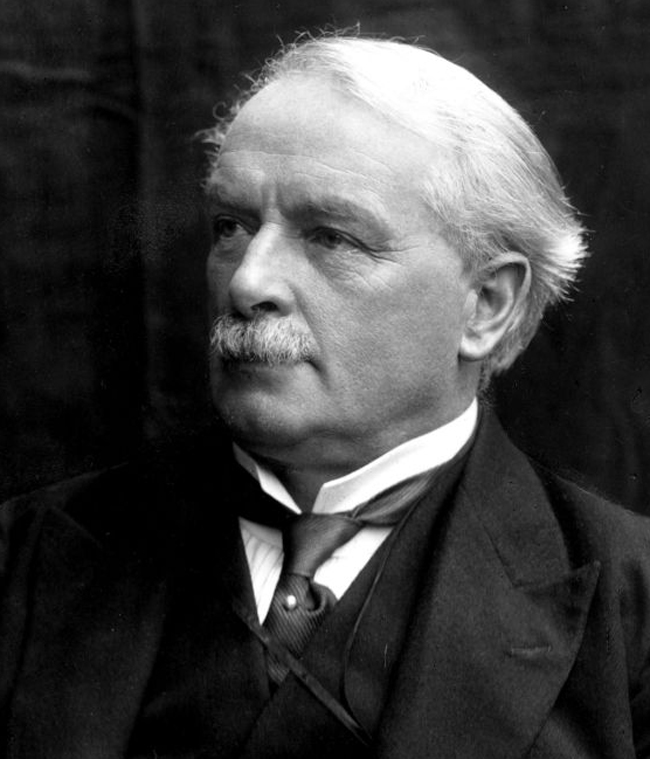

David Lloyd George
¿Quien fue?
Nació en Mánchester el 17 de enero de 1863, en el seno de una familia galesa, hijo de un maestro rural. Se crio en el condado de Caernarvon y trabajó como pasante de un despacho de abogados en su juventud. Participó en la política galesa desde que comenzó a ejercer la abogacía y fue elegido diputado por el Partido Liberal en la Cámara de los Comunes en 1890. Defendió una política radical en materia social, apoyó el nacionalismo galés y se opuso a la intervención británica en las guerras anglo-bóer. En 1905 fue nombrado ministro de Comercio del Gobierno liberal y pasó a ser ministro de Hacienda en 1908. Presentó un presupuesto en 1909 en el que se asignaba una gran partida para proyectos sociales, por lo que tuvo que hacer frente a la rotunda oposición de los conservadores y de la Cámara de los Lores, que finalmente lo rechazaron. En 1909 pronunció un discurso en el distrito de Limehouse para defender su presupuesto y censuró firmemente la postura de sus adversarios. Poco después, se aprobó la Ley Parlamentaria de 1911, que prohibía a la Cámara de los Lores su veto sobre los proyectos de ley presupuestarios, y se adoptaron muchas de las reformas propuestas por Lloyd George, como la creación de un sistema de seguros sociales de enfermedad, invalidez y desempleo, que han sido consideradas como la base en que años más tarde se asentaría en su país el llamado estado de bienestar.

Primera Guerra Mundial
Primera Guerra Mundial En 1914, a comienzos de la Primera Guerra Mundial, continuó dirigiendo el Ministerio de Hacienda; afianzó el crédito del Reino Unido de Gran Bretaña e Irlanda y procuró que la situación económica del país fuera lo suficientemente estable como para resistir el esfuerzo bélico. Pasó a ser ministro de Armamento en 1915 y de la Guerra en 1916. Propuso que el gabinete ministerial fuera más restringido y eficaz mientras continuara la guerra y que se estableciera la prioridad absoluta de los asuntos bélicos. El primer ministro liberal, Herbert Henry Asquith, presentó su dimisión en diciembre de 1916 y Lloyd George pasó a ocupar su puesto en un gobierno de coalición con los conservadores. Creó el gabinete de guerra imperial restringido a cinco miembros y luchó por un mando unificado en el bando aliado, que finalmente consiguió en la primavera de 1918. Otra decisión importante de por entonces fue la orden dada al general Edmund Allenby para tomar Jerusalén, objetivo que se cumplió a finales de 1917. Durante el primer trimestre de ese año afrontó la oleada alemana de la guerra submarina irrestricta, que estuvo a punto de llevar a los aliados al borde del colapso. La adopción del sistema de convoyes, al que en principio era contrario, se emplearía con gran éxito a partir de mayo de 1917.
Cargos que tuvo
| Cargo | Año de inicio | Año de finalización | Descripción |
|---|---|---|---|
| Primer Ministro del Reino Unido | 1916 | 1922 | Lideró Gran Bretaña durante la Primera Guerra Mundial. |
| Ministro de Hacienda | 1908 | 1915 | Introdujo reformas sociales y presupuestos progresistas. |
| Ministro de Municiones | 1915 | 1916 | Organizó la producción de armamento durante la guerra. |
| Secretario de Comercio | 1905 | 1908 | Promovió reformas laborales y sociales. |
El Zar Nicolas ll de Rusia
¿Que hizo?
(San Petersburgo, 1868 - Yekaterimburgo, 1918) Último zar de Rusia, en quien se extinguió la dinastía Romanov. Accedió al trono en 1894, sucediendo a su padre, Alejandro III de Rusia. En general siguió la política autocrática de su antecesor, si bien parece haber mostrado escaso interés y nulas aptitudes para las tareas de gobierno. Por incapacidad o por debilidad, cayó bajo la influencia de la zarina Alejandra Fiódorovna (la princesa Alix de Hesse-Darmstadt) y de su consejero Rasputín.
En 1894, y tras complicaciones derivadas de una nefritis, falleció su padre, Alejandro III. El 14 de mayojul./ 26 de mayo de 1894greg. y pasado el período de luto protocolario, Nicolás fue coronado como sucesor y adoptó el nombre de Nicolás II. De acuerdo con sus propias palabras, carecía de formación política, y se consideraba un ignorante acerca del gobierno del imperio, explicando su ingenuidad al ser coronado zar en noviembre de 1894. Incluso su propio padre dudaba de su habilidad para administrar y mantener un territorio de 23 millones de km².
La influencia de sus tíos paternos, en especial Sergio Aleksándrovich Románov, gran almirante de la Armada, tendría en ello un asidero, y las intrigas cortesanas pesarían grandemente en la acción del nuevo zar, pues de hecho tuvo que soportar al principio manipulaciones de sus propios tíos.
Primera Guerra Mundial
El asesinato del archiduque Francisco Fernando de Austria en Sarajevo por parte de nacionalistas serbios (atentado de Sarajevo) puso a Nicolás II en un duro aprieto, puesto que su pacto con los serbios no le permitía acceder a las demandas compensatorias del Imperio austrohúngaro. Un extenso intercambio de correspondencia con el káiser Guillermo intentó evitar una confrontación global, y Nicolás II dio órdenes de movilizar tropas solo en la frontera austríaca; el 31 de julio de 1914, ordenó una movilización general, lo que provocaría la declaración de guerra de Alemania y el inicio de la guerra mundial. El Ejército Imperial Ruso tuvo grandes éxitos iniciales en territorio austríaco y en su momento pudo haber derrotado al Imperio austrohúngaro, pero su avance fue detenido a petición de Francia; sin embargo, el intento inicial de avanzar sobre territorio alemán en dos frentes, uno al mando del general Rennenkampf y el otro al mando del general Samsónov condujo a graves derrotas, en las que perdieron la vida más de dos millones de hombres. Para 1915, el ejército ruso estaba en retirada. Nicolás II reunido en el Cuartel General con los comandantes jefes de los frentes. 1916 Nicolás II, aconsejado por su esposa, el 23 de agostojul./ 5 de septiembre de 1915greg. asumió el mando supremo del Ejército Imperial Ruso, relevando a su primo, el gran duque Nicolás Nikoláievich, y nombrándolo comandante jefe del Frente del Cáucaso. El general Mijaíl Alekséyev fue designado comandante jefe del Estado Mayor. Todos los ministros estuvieron en contra de esta decisión, en particular, el ministro de Exteriores Serguéi Sazónov en la reunión del Consejo de Ministros afirmó: "Esto es tan horrible que provoca un caos total en mi mente. A Rusia la empujan al borde del abismo".[18] Fue este un error más, si cabe más grave que la misma declaración de guerra, pues supuso dejar la regencia en manos de su esposa, a quien el pueblo detestaba tanto por su origen alemán como por su estrecha relación con Rasputín. Un detalle importante que explicaría la súbita sustitución del gran duque Nicolás Nikoláievich, es que este aborrecía a muerte a Rasputín; el monje astutamente aconsejó en forma insistente a la Emperatriz que se lo quitara de en medio, puesto que sectores de la plebe lo llamaban Nicolás III, en alusión a su probable entronización.